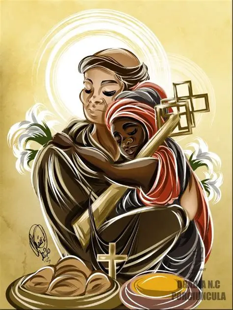
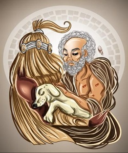
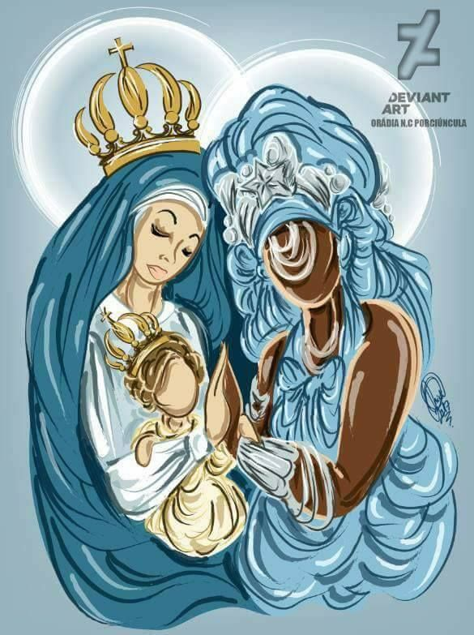
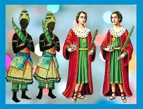

Oxalá
- Oxalá é sincretizado por Jesus Cristo ou Senhor do bonfim.
- Axé: Paz, Amor, União e caridade.
Exu orixá
- Exu orixá é sincretizado por Santo antonio.
- Axé: Abertura de caminhos, desfazer feitiços, cura .

Ogum
- Ogum é sincretizado por São Jorge
- Axé: Vencer demandas, abertura de caminhos, responsável por todos os Exus.
- Oxóssi é sincretizado por São Sebastião ou Santo Antonio.
- Axé: Conhecimento, provedor da fartura.
- Xangô é sincretizado por São Pedro ou São Jerônimo
- Axé: Justiça, cumpridor da Lei Maior.
- Omulu é sincretizado por São Lázaro ou São Roque.
- Axé: Da cura, das peste, da morte.
- Oxum é sincretizada por Nossa Senhora Aparecida ou Nossa Senhora da Conceição.
- Axé: Amor de familia, fortuna, prosperidad.
- Iemanjá sincretizada por Nossa Senhora das Candeias ou, da Conceição, ou dos Navegantes.
- Axé: geração, fertilidade em todos os sentidos.
- Iansã sincretizada por Santa Bárbara.
- Axé: Guerreira, batalhadora e forte.
- Nanã é sincretizada por Nossa Senhora Santana.
- Axé: Este é um dos orixás na Umbanda com grande Axé… É a decantação, morte do supérfluo.
- Ibeji são sincrtizados por São cosme e São Damião
- Axé: Alegria e cura.
Oxóssi
Xangô
Omulu

Oxum

Iemanjá

Iansã
Nanã Buruquê
Ibeji
